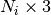
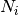
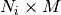

tract_querier.tractography¶
Classes
tract_querier.tractography.Tractography([...]) |
Class to represent a tractography dataset |
Functions
tract_querier.tractography.tractography_from_vtk_files(...) |
|
tract_querier.tractography.tractography_to_vtk_file(...) |
-
class
tract_querier.tractography.Tractography(tracts=None, tracts_data=None, validate=True, **kwargs)[source]¶ Class to represent a tractography dataset
Parameters: tracts : list of float array 
Each element of the list is a tract represented as point array, the length of the i-th tract is 
tracts_data : dict of <data name>= list of float array of 
Each element in the list corresponds to a tract, is the length of the i-th tract and M is the number of components of that data type.
validate : bool
Check that tracts and tracts_data are valid
Attributes
extra_argsMethods
add_tract_data_from_array(name, array)Add a new data element reproducing a constant data value for each of the  tracts.
tracts.append(tracts[, tracts_data, validate])Append tracts and corresponding data to the current set are_tracts_filtered()are_tracts_subsampled()filter_tracts(criterium)Filter the tracts in the set according to a criterium function filtered_tracts_map()Tract indices included after the filtering original_tracts()Tract set used to original construct this original_tracts_data()Tract data contained of the original dataset of this tractography object subsample_tracts(points_per_tract)Subsample the tracts in the dataset to a maximum number of tracts()Tracts contained in this tractography object after filtering and tracts_data()Tract data contained in this tractography object after filtering and unfilter_tracts()Reset any filtering applied to the tracts unsubsample_tracts()Reset any subsampling applied to the tracts -
add_tract_data_from_array(name, array)[source]¶ Add a new data element reproducing a constant data value for each of the
tracts.After execution, the tract data will have a new set original_tracts_data()[name][i][:] == array[i]
Parameters: name : str
Name of the new data element
array : array of length
Data value for each tract
-
append(tracts, tracts_data=None, validate=True)[source]¶ Append tracts and corresponding data to the current set
Parameters: tracts : list of float array
Each element of the list is a tract represented as point array, the length of the i-th tract is
tracts_data : dict of <data name>= list of float array of
Each element in the list corresponds to a tract, is the length of the i-th tract and M is the number of components of that data type.
validate : bool
Check that tracts and tracts_data are valid
-
extra_args¶
-
filter_tracts(criterium)[source]¶ Filter the tracts in the set according to a criterium function
Parameters: criterium : function of array
 -> Bool
-> BoolA function taking a tract as an array of 3D points and returning True or False with specifying if it should be included
-
filtered_tracts_map()[source]¶ Tract indices included after the filtering
Returns: List of tract indices included after the filtering
-
original_tracts()[source]¶ Tract set used to original construct this tractography object, no subsampling or filtering applied
Returns: tracts : list of float array

Each element of the list is a tract represented as point array, the length of the i-th tract is
-
original_tracts_data()[source]¶ Tract data contained of the original dataset of this tractography object
Returns: tract data : dict of <data name>= list of float array of
Each element in the list corresponds to a tract, is the length of the i-th tract and M is the number of components of that data type.
-
subsample_tracts(points_per_tract)[source]¶ Subsample the tracts in the dataset to a maximum number of points per tract
Parameters: points_per_tract: int
Maximum number of points per tract after the operation is executed
-
tracts()[source]¶ Tracts contained in this tractography object after filtering and subsampling if these operations have been applied
Returns: tracts : list of float array
Each element of the list is a tract represented as point array, the length of the i-th tract is
-
tracts_data()[source]¶ Tract data contained in this tractography object after filtering and subsampling if these operations have been applied
Returns: tract data : dict of <data name>= list of float array of
Each element in the list corresponds to a tract, is the length of the i-th tract and M is the number of components of that data type.
-
-
tract_querier.tractography.tractography_to_trackvis_file(filename, tractography, affine=None, image_dimensions=None)[source]¶
-
tract_querier.tractography.vtkPolyData_to_tracts(polydata, return_tractography_object=True)[source]¶ Reads a VTKPolyData object and outputs a tracts/tracts_data pair
Parameters: polydata : vtkPolyData
VTKPolyData Object
Returns: tracts : list of float array N_ix3
Each element of the list is a tract represented as point array, the length of the i-th tract is N_i
tract_data : dict of <data name>= list of float array of N_ixM
Each element in the list corresponds to a tract, N_i is the length of the i-th tract and M is the number of components of that data type.